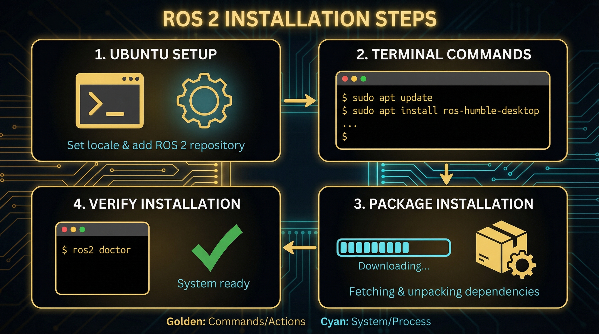

ROS2安装实操：以Humble/Jazzy为例
系统要求
Ubuntu 22.04 (Humble) / Ubuntu 24.04 (Jazzy)
内存：4GB+ (推荐8GB)
硬盘：50GB+ 可用空间
处理器：x86_64或ARM64
安装步骤
设置语言环境：locale settings
添加ROS2源：setup sources.list
安装ROS2包：apt install ros-humble-desktop
环境设置：source /opt/ros/humble/setup.bash
验证安装
ros2 run turtlesim turtle_simulator
常见问题
公钥错误：更新apt或手动添加密钥
依赖问题：运行apt install -f
环境未加载：检查~/.bashrc配置

版本对比
Humble 2022 LTS
Jazzy 2024 LTS
20